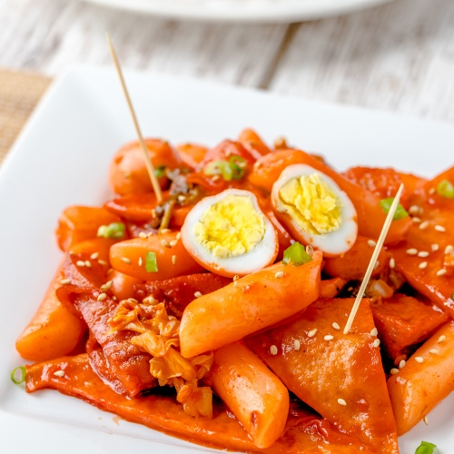

Tteokbokki Recipe

Description
Tteokbokki is a popular Korean dish and street food. The dish
consists of chewy rice cakes cooked in a spicy, gochuhang-based broth.
Ingredients
- Cylinder-shaped tteok (rice cakes)
- Water
- Large-size dried anchovies
- Dried kelp
- Gochujang
- Gochugaru (Korean chili flakes)
- Sugar
- Scallions
- Hard boiled eggs (optional)
- Fish cakes (optional)
Steps
- Add water, dried anchovies, and dried kelp into a shallow pot/pan
- Boil for 15 minutes
- Combine gochujang, gochugaru, and sugar in a small bowl to make
the tteokbokki sauce
- Remove anchovies and kelp from the pot
- Add tteok, sauce mixture, green onions, fish cakes, and eggs
- Stir gently when pot starts to boil
- Let it simmer and keep stirring until tteok becomes soft and
the tteokbokki sauce thickens and looks shiny
- Remove from heat and serve hot